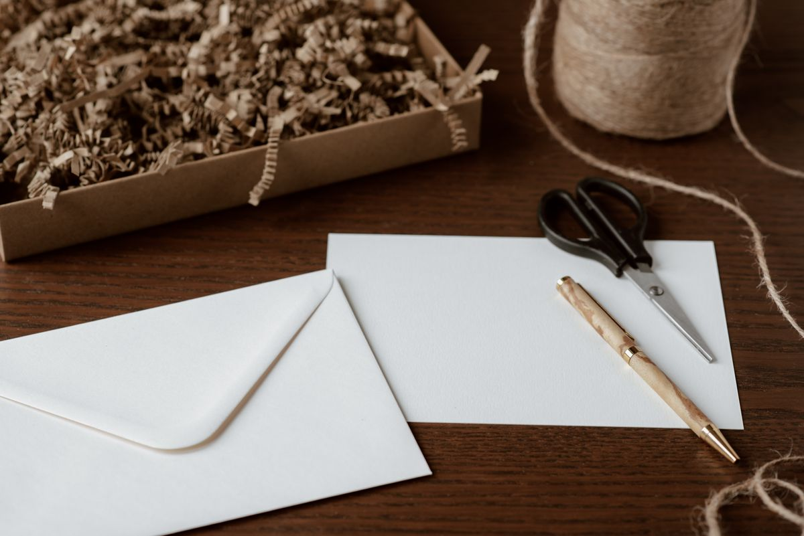

为什么邮箱比手机号重要
换手机、换运营商、换一个国家生活，常用邮箱都可以继续用。把它当成长期的账户入口，再让手机号负责当地联系。
如果明天要换手机号，你得先改哪些账户？银行、外卖、支付、社交软件，也许还有几家早已忘记注册过的网站。再想想上次换手机或换运营商时，你的邮箱地址有没有一起换。大多数时候，你只是在新设备上重新登录了一次。
这种差别决定了我会把哪个地址印在简历上，又会把哪个留给送餐的骑手。对方需要今天打通你的电话，给手机号更方便。对方可能几年后还要联系你，邮箱通常更适合作为那个长期入口。
能联系你，也能帮你找回账号
邮箱能收验证链接、登录码、预约确认和账单，也能收到密码重设邮件。在很多网站上，它同时就是用户名。它还能发文件、留下完整的往来记录，发到国外时，收件人只需要提供一个邮箱地址。不管邮箱由哪个服务商托管，给对方寄信的方法都一样。
手机号也能做验证和通知，但网站可能只认特定区号，或者对运营商和号码类型有要求。邮箱有一套在不同服务商之间通用的传递方式，不必为每个国家再申请一个地址。个别平台仍会要求电话、地区资格或身份核验。遇到这些场景，可靠的手机号依然有价值。


号码更像在租用
运营商分给你的号码，需要你维持服务才能继续用。按月付费、定期充值或完成规定的使用活动，都可能是保留号码的条件。号码停用后还可能被重新分配。如果它恰好是旧账号唯一的恢复方式，换号后，你可能连那份订单、文件或聊天记录也找不回来。
邮箱也有服务条款，但你通常可以选择带基础免费额度的个人邮箱，只要保持活动并妥善管理账号，就能长期使用。以 Google 为例，个人 Google 账号闲置达到两年，可能根据其不活跃账号政策被删除。有长期保留的打算，就把这个地址用起来，并把重要文档和联系人留一份备份。
日常通话已经有了更多入口
和家人朋友聊天，不少人早就习惯点开微信、WhatsApp 或 FaceTime。网络语音、视频和留言在一个对话里，出国时连上网络也能接着聊。应用的开户方式各不相同，有些依然需要绑定手机号。
还有一项容易混淆的功能叫 Wi-Fi Calling。它用 Wi-Fi 承载运营商的通话，在蜂窝信号较弱时仍可能用原号码拨打和接听。能不能用、在哪些地方能用，要看设备、运营商和服务设置。WhatsApp 等应用里的网络通话，则使用应用自己的联系人和通话服务。
选一个你愿意一直用的邮箱
想让更换手机或搬家少一点麻烦，可以从整理三个最重要的账户开始：常用邮箱、保管照片或文件的账户，以及最常用的工作或支付账户。检查每个账户能通过哪些方式找回邮箱或号码，换号之前趁旧号还在手上，把恢复设置一并更新。
- 用个人邮箱做长期入口，工作、学校发的地址主要留给该机构的事务。
- 给主邮箱设置独立密码。支持通行密钥或验证器时，可以启用，并把恢复码另外保存。
- 在有选择的地方优先留下长期邮箱。需要本地通话或短信验证时，再填对应的手机号。
下次你给一个刚认识的人留联系方式，想想你们会在什么时候再次联系。如果是几个月后的工作机会，或者几年后的一次重逢，把那个你愿意一直用下去的邮箱给对方。
封面与配图来源于网络，侵删。